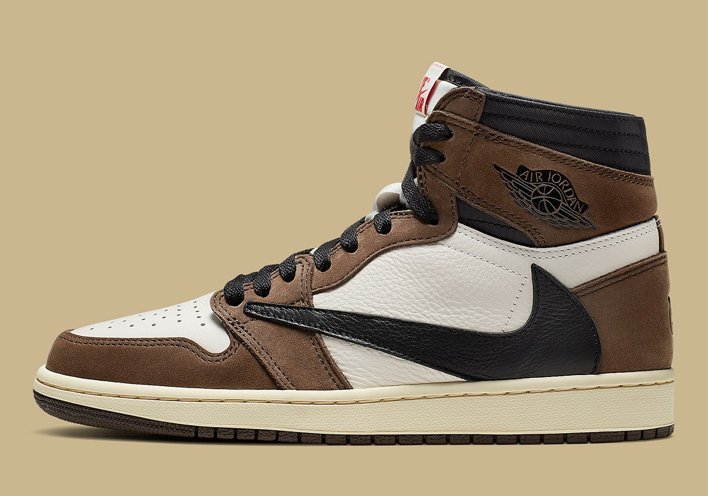

“Una colaboración entre Travis Scott y la marca Jordan, Travis Scott x Air Jordan 1 Retro High OG 'Mocha' presenta un Swoosh de gran tamaño hacia atrás en el lateral. La construcción de cuero blanco caído y gamuza Dark Mocha está acentuada por la marca University Red Cactus Jack y Nike en la lengüeta, mientras que el talón luce el logo de la cara de Scott en relieve.”.
